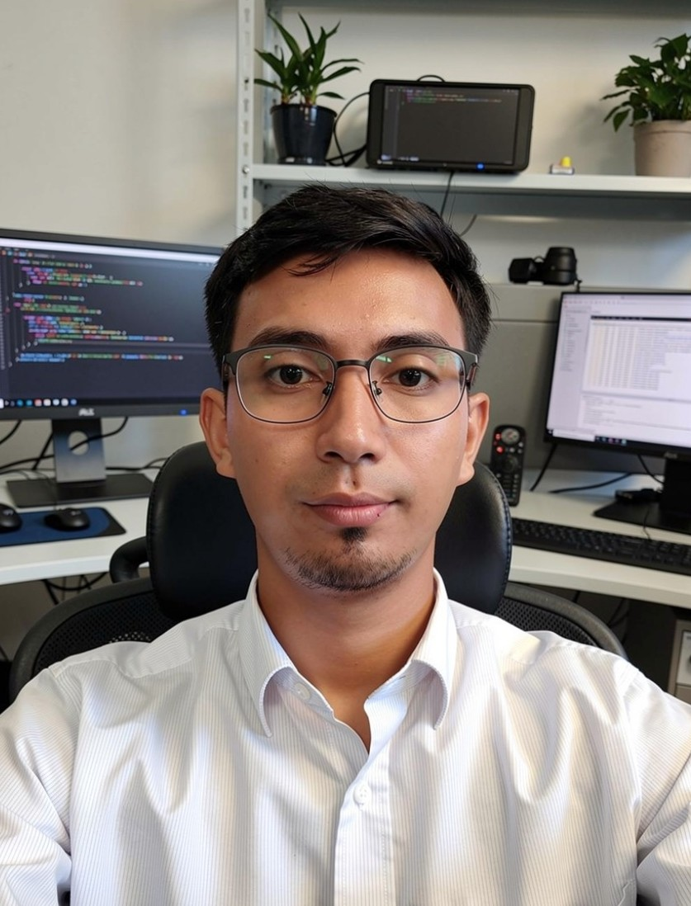

Data Systems Specialist — spesialis pengelolaan data dengan kemampuan pengembangan sistem informasi berbasis web.
Developer berpengalaman mengembangkan aplikasi web untuk perusahaan dan institusi pendidikan. Menggabungkan kemampuan teknis dengan pemahaman proses bisnis untuk menghasilkan solusi yang tepat guna.
Proyek nyata yang pernah saya kerjakan secara langsung sebagai developer.
Sistem informasi terpadu berbasis web yang melayani seluruh kebutuhan operasional kampus — dari data akademik, keuangan, kepegawaian, hingga pelaporan PDDIKTI. Dibangun dalam tim dengan arsitektur multi-modul, mendukung banyak pengguna secara bersamaan, dan dilengkapi SSO (Single Sign-On) untuk kemudahan akses. Berkontribusi dalam pengembangan beberapa modul sistem.
Aplikasi web untuk memantau status sertifikasi seluruh pegawai perusahaan. Fitur utama: dashboard status sertifikasi, notifikasi masa berlaku, pelatihan wajib, dan rekomendasi perpanjangan. Membantu HRD melacak kepatuhan sertifikasi tanpa lagi manual spreadsheet.
Sistem pengelolaan proses pengadaan mulai dari permintaan, persetujuan, hingga penerimaan barang. Mencakup workflow approval multi-level, pencatatan vendor, dan laporan real-time untuk manajemen. Menggantikan proses manual berbasis kertas menjadi terdigitalisasi penuh.
Platform ujian berbasis komputer yang mendukung penambahan soal, pengelolaan peserta, penilaian otomatis, dan rekap hasil. Digunakan untuk ujian seleksi atau evaluasi internal dengan antarmuka yang mudah dipahami oleh peserta tanpa latar teknis.
Aplikasi pengelolaan pengajuan dan persetujuan izin (cuti, tugas, perjalanan dinas, dll). Dilengkapi arsip digital dan alur persetujuan terstruktur. Mempercepat proses persetujuan yang sebelumnya memakan waktu berhari-hari.
Sistem pengelolaan inventaris obat dan produk apotek. Mencakup pencatatan stok masuk-keluar, kadaluarsa obat, penjualan, serta laporan stok real-time. Membantu apoteker mengelola persediaan secara efisien dan mengurangi risiko kehabisan atau penumpukan stok.
Sistem pencatatan dan monitoring pelanggaran siswa di lingkungan sekolah. Dilengkapi kategori pelanggaran, poin pelanggaran, rekap per siswa, dan laporan untuk wali murid. Membantu pihak sekolah mendisiplinkan siswa secara lebih terstruktur dan transparan.
Website informasi sekolah berbasis web yang menampilkan profil sekolah, berita, galeri kegiatan, dan informasi akademik. Dilengkapi halaman admin untuk pengelolaan konten oleh pihak sekolah tanpa perlu pengetahuan teknis.
Website company profile untuk memperkenalkan profil perusahaan, layanan, portofolio, dan informasi kontak secara profesional. Dirancang agar mudah diakses dari berbagai perangkat dan memberikan kesan pertama yang baik bagi calon klien.
Stack utama dan kompetensi yang saya kuasai.
Tertarik bekerja sama? Jangan ragu untuk menghubungi.